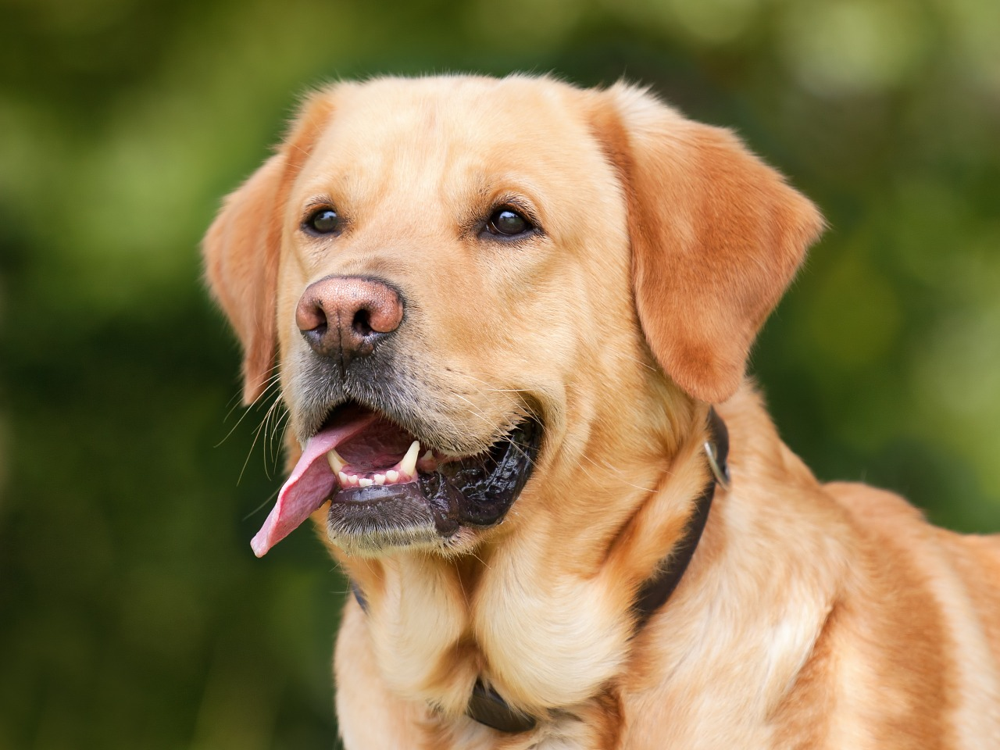

A labrador retriever a világ egyik legnépszerűbb és legbarátságosabb
kutyafajtája. Intelligens, rendkívül játékos és imád a családjával,
valamint gyerekekkel lenni. Kiváló szaglása és tanulási vágya miatt
gyakran alkalmazzák mentőkutyaként vagy vakvezetőként is.
A család legjobb barátja

Tudnivalók
A labrador retriever átlagos élettartama 10–12 év, marmagassága
pedig általában 54–62 cm körüli, míg a súlyuk nemzedéktől és
nemtől függően 25–36 kg között mozog. Testfelépítés: Erős,
izmos testalkatú, vízhatlan szőrzettel és a jellegzetes, úgynevezett
„otter-tail” (vidrafarok) nevű, vastag farokkal rendelkezik, ami
kiváló úszóvá teszi. Egészség: Hajlamosak lehetnek a csípő- és
könyökdiszpláziára, valamint a túlevésre is, mivel hajlamosak a
hízásra, ezért fontos a megfelelő étrend és a rendszeres mozgás.
A labrador munkakedve és szociális oldala
A labrador retrieverek nemcsak családi kutyák, hanem kiváló
munkakutyák is, amelyek legendás munkakedvükről és
segítőkészségükről ismertek. Eredetileg arra tenyésztették őket,
hogy visszahozzák a halászok hálóját és a kilőtt vadakat a vízből,
ezért szinte vonzza őket a víz és a labdázás. Ennek a fáradhatatlan
energiának köszönhetően terápiás kutyaként is fantasztikusan
teljesítenek, mivel rendkívül érzékenyen reagálnak az emberek
érzelmeire.
Miért jó választás a labrador?
A labrador kiváló választás azoknak, akik aktív, szeretetteljes és
tanulékony kutyát keresnek. Gyerekekkel jól kijön, könnyen
betanítható, és rengeteg kedvességgel rendelkezik. Szereti a
figyelmet, a közös játékot és a feladatokat, ezért napközben is
könnyen motiválható, ha sok mozgást és szellemi kihívást kap.
Gondozás és szükségletek
- napi legalább 1–2 óra mozgás
- rendszeres fésülés és szőrápolás
- jó minőségű, kiegyensúlyozott táplálás
- oktatás és szocializáció fiatal korától